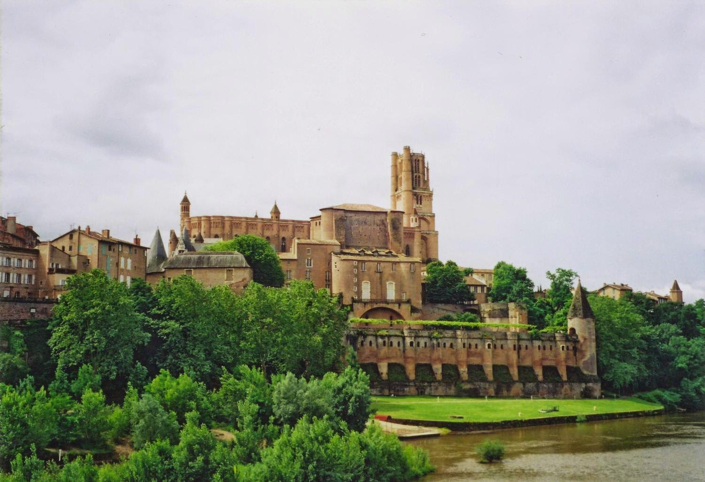
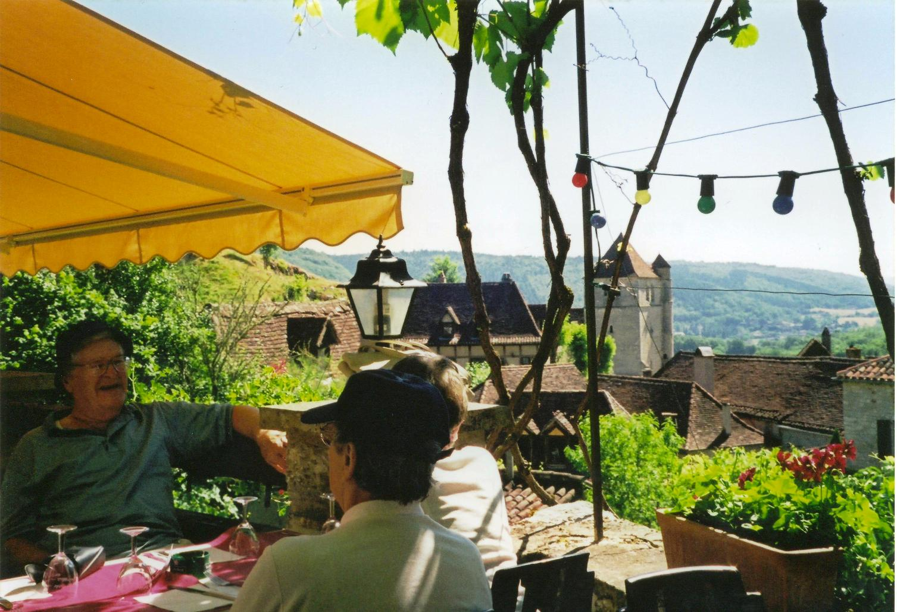

Page & Moy 2001
 Mum, Dad, Jean and I went on a Page and Moy tour to France. We flew in to Toulouse and stayed in Albi. We had a free day in Albi so had a good look around on foot. After a coffee/whie wine in a cafe in the Old Quarter, Mum, Jean and I went for a look in the Cathedral Basilica of Saint Cecilia, also known as Cathédrale d'Albi. It was built in the aftermath of the Albigensian Crusade. The exterior resembles a fortress, but the interior is lavishly decorated in the Toulousian or Southern French Gothic. It was begun in 1282 and was under construction for 200 years. It is claimed to be the largest brick building in the world. We realsised there was some sort of service on, so we sat down quietly in the back, only to find ourselves at a funeral. We left as quickly and unobtrusively as we could.{kind=link}
From there we made our way down towards the River Tarn and the two bridges, Pont Vieux and Pont Neuf. In the 12th century, Albi was at an important crossroads linking the Mediterranean Sea, the Atlantic Ocean, the Basque country, Toulouse, Lyon, Catalonia and Paris. As a point of passage, the Pont Vieux was able to levy a toll. From this bridge, there is are great views of The Palace of the Bishops of Albi or Berbie Palace, which overlooks the Tarn below the Cathedral and now houses the Toulouse-Lautrec museum.
Our first trip took us to the Ville Bastides of the area. Bastides are fortified medieval towns. Some of the first bastides were built under Raymond VII of Toulouse to replace villages destroyed in the Albigensian Crusade. Almost 700 bastides were built between 1222 and 1372. Bruniquel which includes the Château de Bruniquel was our first stop. Next up was the Château de Mayragues.It is part of a wine estate of biodynamically cultivated vines. The castle, a former fortified house, built on a rocky outcrop, was founded in the 12th century, extended in the 17th century, and restored from a state of ruin in 1980. We also visited Château de Najac or the royal fortress of Najac is built at the summit of a hill formed by a loop of the river. We also went to Cordes-sur-Ciel and Castres. The former is thought to be the first of the bastides of Southwest France.
 The next day was a trip to Cité de Carcassonne, a medieval fortified citadel located in Carcassonne. At the end of the Crusade against the Albigensians, the city became an emblematic centre of the power of the King of France. It was listed as a World Heritage site by Unesco in 1997. We stopped for lunch at café-restaurant Lou Bolat in Saint-Cirq-Lapopie, a village situated on a steep cliff 100m above the river Lot. It is a member of the Les Plus Beaux Villages de France (The most beautiful villages in France) association. We also visited Rocamadour, a small clifftop village, known for the Cité Réligieuse complex of religious buildings, accessed via the Grand Escalier staircase. It includes the Chapelle Notre-Dame, with its Black Madonna statue, and the Romanesque-Gothic Basilica of St-Sauveur, and has been a crucial pilgrimage site on the 'Way of Saint James' for hundreds of years. It is very pretty and very touristy.
{kind=link}
Our tour also took us to Cahors, where we saw The Pont Valentré. It's a 14th-century six-span fortified stone arch bridge crossing the Lot River, and is a symbol of the city. Beynac, Sarlat-la-Canéda and La-Roque-Gageac, another member of the Les Plus Beaux Villages de France association, were also visited.